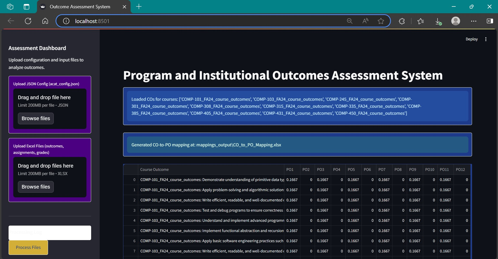
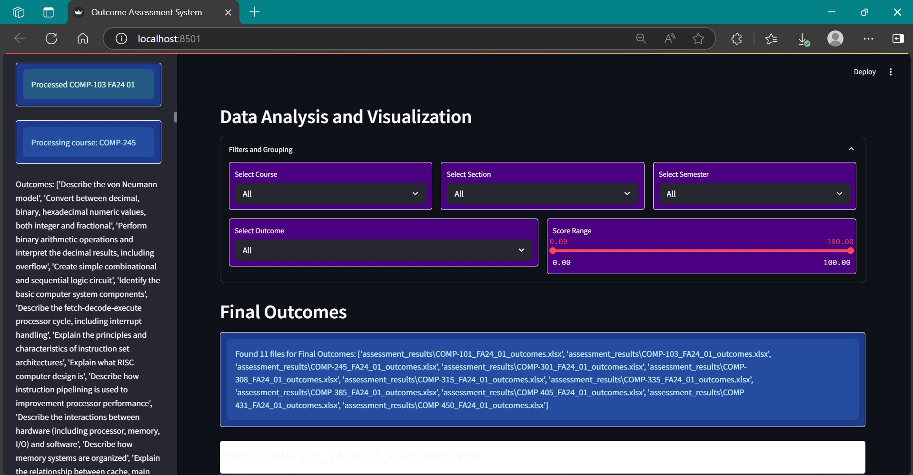
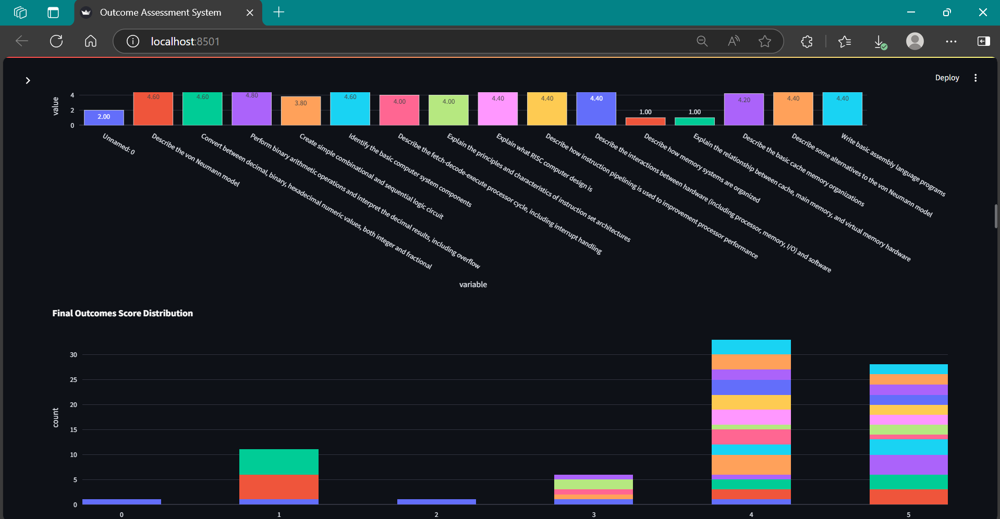

Project Introduction
This portfolio presents my contributions to a comprehensive academic assessment system developed during the course. The system automates the mapping of Course Outcomes (COs) to Program Outcomes (POs), and further to Institutional Outcomes (IOs). My focus was on building core features that process educational data, assess learning metrics, generate insights using intelligent agents, and provide an interactive visualization layer through a GUI.
My Role and Contributions
I worked on User Story US1: Program and Institutional Outcomes Assessment System with Student Analysis (#49). My responsibilities included back-end data processing, intelligent agent development (CrewAI), GUI implementation, testing, documentation, and deployment validation.
Key Functional Areas
- Designed and implemented logic for reading and validating configuration and grade files
- Wrote algorithms for mapping CO → PO → IO performance scores
- Developed CrewAI – a suite of agents that generate narrative insights from assessment data
- Built a responsive, multi-tab GUI with filters, interactive charts, and Excel export support
- Created unit/integration test cases using pytest
- Wrote deployment documentation and verified clean setup
Sprint Summary
| Sprint | Task | Hours | Status |
|---|---|---|---|
| Sprint 1 | File Input and Validation | 9 | Completed |
| Sprint 2 | Institutional Outcome Computation | 9 | Completed |
| Sprint 3 | CrewAI Agent Development | 15 | Completed |
| Sprint 3 | Panel GUI Development | 19 | Completed |
| Sprint 3 | Testing & Validation | 9 | Completed |
| Sprint 4 | Documentation & Deployment | 8 | Completed |
Sprint 1: I began by designing and implementing a robust file input system that validates user-uploaded configuration and grade files. This foundational work ensured that all downstream processes operated on clean, structured, and error-free data.
Sprint 2: My focus shifted to computing Institutional Outcomes (IOs) from the Course and Program Outcome mappings. I crafted the algorithms that calculated aggregated performance metrics and translated assessment rules into working code logic.
Sprint 3: This was my most intensive sprint, where I built the CrewAI agents. These intelligent modules analyzed learning performance and generated human-readable insights. Alongside, I engineered a multi-tab GUI using tkinter that allowed users to explore the assessment results with interactive filters, visual plots, and data exports. I also dedicated time to thorough unit and integration testing.
Sprint 4: In the final phase, I focused on writing detailed documentation and validating the deployment process on new environments. I ensured clean installation, user guidance, and stability of the system to close the development loop professionally.
Public Resources
Code Repository: run_acat.py (GitHub)
My Pull Requests: GitHub Contribution History
Appendix
Screenshots
Below are screenshots showcasing key parts of the system and interface:
  